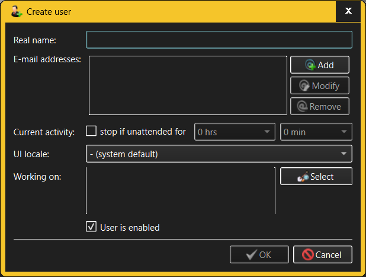

Create/Modify User dialog
The same dialog is used for both creating new Users and modifying existing
Users.

The fields in the Create/Modify User dialog allow the user to specify:
- Real name - the actual name of the person or group
represented by the User. While TimeTracker3 imposes no requirement that all
Users have different "real names", it is recommended that they do so
- E-mail addresses - One or more e-mail addresses can be
associated with a User. These are utilized when e.g. auto-mailing
notifications (or simply to distinguish different persons who happen to have
the same names). Use Add, Modify and
Remove buttons to manage the list of User's e-mail
addresses.
- Current activity/Stop if unattended - these fields
govern what happens if the user starts recording some Activity and then
leaves the computer unattended. If this is to happen, TimeTracker3 may
automatically finish the Activity in question, logging a comment to that
effect. NOTE that this behavior can be overridden on a per-Activity basis
(for example, to specify different inactivity timeouts for different
Activities).
- UI locale - this specifies the language which the
TimeTracker3 will use for its GUI when the user logs in using one of that
User's Accounts. The default choice is to not use the User-specific UI
locale, but to revert to the TimeTracker3's default UI locale which, in
turn, starts off as the system UI locale.
- Working on - these controls restrict the Activities for
which the User is allowed to log Work items. If the list is empty,
then no restriction is in place and the User can log Work items for any
visible Activity (that is, any Public Activity/Task and any of that User's
Private Activities/Tasks).
- Enabled - by default, all Users are created as
"enabled". "Disabling" a User will disallow logging in to the TimeTracker3
workspace using any of that User's Accounts. NOTE that it is not possible to
disable the last workspace administrator User.
Generally an Administrator or Manage Users capability is required to create
new Users and modify existing Users. The only exception to this rule is that
anyone who has an Account in a given workspace and who logs into TimeTracker3
using that Account will be able to modify the details of the User to which that
Account belongs.
When a "current Activity" is stopped automatically because the user
inactivity time exceeds the timeout specified for the current User, the logged
Work item does not include the timeout period itself. So, for example,
when the User's timeout is set to 1 hour and the user starts some Activity,
works for 2 hours and then leave the office, 1 hour later the "current" Activity
will be automatically stopped ans a 2-hours-long Work item will be recorded.
See also: -